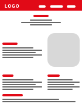

Grotekerstballen.nl
Webshop & SEO
(Dutch website Grotekerstballen.nl )This website is focust on selling massive baubles. These are meant to be used as decoration in shopping streets. This website is made with html css and focust on SEO.

Building the website
This website, built in 2018, could benefit from some updates in the design and html/css; however, it is still functioning well for its primary purpose.
Search engine optimization
I conducted research for this website on the best SEO practices, including what type of content to write, which meta tags to use, and how to structure them. After applying these changes, the website began to climb up the search engine rankings. Now it can be found on the first page for multiple search queries, such as 'grote kerstballen', 'Reuze kerstballen', and 'grote kerstballen voor buiten'.
Family websites
grote-decoraties and PBB-Citylights are websites for the same owner. From these website I made grote-decoraties. PBB-Citylights is made by the owner of the main companey. All the websites made for the same subject but but slightly different. This is to higher the chances of a costomer finding the websites.